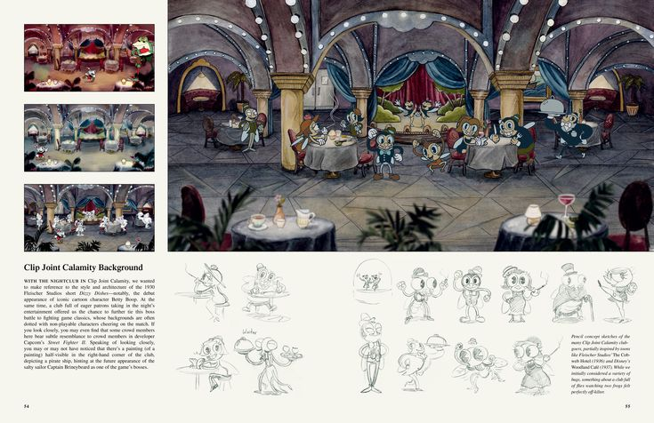

Los hermanos Moldenhauer y el nacimiento del proyecto
La creación del videojuego Cuphead representa uno de los casos más destacados de emprendimiento e ingeniería creativa en la industria independiente. El proyecto nació en el año 2010 en Canadá, impulsado por los hermanos Chad y Jared Moldenhauer, quienes crecieron viendo cintas VHS de dibujos animados de los años treinta y jugando títulos clásicos de acción arcade como Contra III: The Alien Wars y Gunstar Heroes (Peña, 2018).
Durante los primeros cuatro años, ambos hermanos trabajaron en el prototipo durante sus horas libres después de cumplir con sus empleos regulares. Sin embargo, cuando presentaron un breve adelanto durante la conferencia E3 de 2014, la enorme reacción del público y la prensa especializada los motivó a dar un paso decisivo: renunciar a sus puestos de trabajo e hipotecar sus propias viviendas para financiar un equipo completo de animadores tradicionales y músicos de sesión (Schreier, 2017).

Expansión remota y el DLC The Delicious Last Course
El equipo de Studio MDHR creció hasta reunir a cerca de veinte profesionales que operaban de manera distribuida desde distintas ciudades de Canadá y Estados Unidos. Este esquema de trabajo colaborativo permitió que especialistas en entintado tradicional enviaran sus láminas físicas para ser escaneadas e integradas en el código del juego, alcanzando un récord de más de 50 000 fotogramas dibujados a mano (Moldenhauer, 2017).
Tras el éxito mundial del juego original en 2017, el estudio publicó en junio de 2022 la expansión titulada Cuphead: The Delicious Last Course. Este contenido adicional introdujo una nueva isla completa, jefes inéditos y a la Srta. Cáliz como personaje jugable con mecánicas propias como el doble salto y el giro invencible, reafirmando el compromiso artesanal del estudio (Studio MDHR, 2022).
Dato Histórico de Ingeniería y Récord Guinness
Cuphead obtuvo el reconocimiento oficial de Guinness World Records por poseer la mayor cantidad de fotogramas dibujados a mano en un videojuego independiente, superando los 50 000 cuadros individuales entintados en papel.